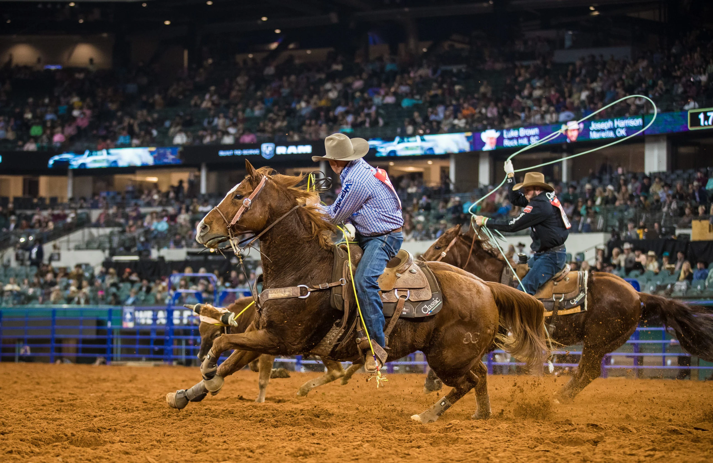

Texas |
by Ian Youn |
||||||||
| Texas is home to over 29 million residents and is the largest state in the contiguous United States with an area of 261,232 square miles. With its large area also comes plenty of fascinating attractions to experience in a visit to Texas. Texas is home to cities such as Houston, San Antonio, and Dallas, which all have a wide variety of breathtaking sights. | |||||||||
SightseeingThere are countless breathtaking attractions in Texas due to its significance in America's history.
One of the most famous attractions is the Alamo, which is a mission located in San Antonio, Texas. The mission is one of the major historic sites of the fight for Texan independence from Mexico.
In the Battle of the Alamo, Texans posed a valient defense against Mexican forces and the Alamo became a symbol for Texan independence. In a later battle, the battle cry Another major sightseeing location is the San Antonio River Walk. The River Walk is touted as the most popular attraction in Texas and consists of countless attractions. In the River Walk,
visitors can experience the bubbling cultural pockets and the awe-inspiring natural landscapes of Texas. Weekly events take place at the River Walk, allowing visitors to explore the
Texan culture to its fullest potential. A major sightseeing location for science lovers is the NASA Johnson Space Center. The spaceflight research facility was originally built to expand the Apollo experiment during the Space Race
of the Cold War. Today, it continues to be one of the largest space bases in the United States, being the home for training astronauts for human space flight. Although it is still used for space research today, part of the space center has been converted to a museum,
called the Space Center Houston, where visitors can learn about astronomy and the history of NASA in America. The museum is home to over 400 different space artifacts and hosts various exhibits and shows about human space flight history. It contains the only replica of the Space Shuttle and has recently opened an exhibit on human life on Mars. The center also hosts STEM workshops for students and adults interested in expanding
their astronomy knowledge through hands-on experiences. |
Johnson Space Center This image is from Dunham Bush |
||||||||
TransportationFor one to travel from northern California to major cities in Texas, it takes about 25 hours to span a trip of about 1700 miles. For those who would not like to go on a multi-day road trip to travel to Texas, flight prices are as follows (from SFO as of March 2022):
The premier public transportation system in Dallas is the DART (Dallas Area Rapid Transit) system, which is a metro system that consists of trains and buses. The transportation system connects Dallas with all of its surrounding suburbs and is a good way to
get around Dallas without a personal vehicle. In other parts of Texas, railroads built historically continue to transport people around Texas along with smaller local railway systems.
|
DART Train This image is from Dallas City News |
||||||||
AccomodationsWith its relatively large area, Texas also features a wide variety of luxury hotels scattered around all of its major cities. The Lancaster Hotel is a hotel located in Houston's theater district that originally opened during the roaring 20s. The hotel is the only hotel located in the theater district, which makes it especially simple to travel through Houston.
The hotel is a five-star one that has been ranked #1 in Houston by various sites. The hotel offers an art gallery with artwork from local artists and luxury dining opportunities. Rooms contain Carrara marble, Frette bedding, and Bulgari bath amenities, which help the century-old hotel stay modern,
The Post Oak Hotel is another hotel located in Houston. It is one of the only 19 Forbes five-star properties. The massive hotel spans over 10 acres and contains upwards of 250 rooms. The hotel houses a private spa and and outdoor tropical-themed pool. The hotel differentiates itself with a private helicopter pad.
Hotel Emma is a hotel located in San Antonio that is a converted brewery. The hotel contains 146 rooms on seven floors. The hotel contains a 3700 book library along with a rooftop pool for guests to enjoy. Some suites of the hotel contain multiple stories, full balconies, and even private fireplaces.
|
The Lancaster Hotel This image is from Booking.com |
||||||||
FoodBarbeque has become a staple in Texas in recent years. Famous for its large portions and beef-based barbeque, Texas is a must-go place for any meat lover. When one thinks of Texas barbeque, we typically think of the style prevalent in Central Texas.
Beef brisket is one of the staple dishes of Texas barbeque with two different styles: moist, which contains fat and more flavor, and lean, which is healthier. Other than brisket, Texas has a wide variety of slow-smoked pulled pork and ribs present at almost every
major festival. Sausages are another major dish in Texas barbeque as the countless varieties combine flavors from all over the world. However, lines for barbeque can span up to two hours, so be prepared to wait a considerable amount if one is looking to get a taste of authentic Texas BBQ.
|
Texas BBQ This image is from Southern Living |
||||||||
EventsRodeos are a major part of Texan culture. Originally introduced by Mexican vaqueros, these Cowboy competitons have become the official sport of Texas. Here is a list of famous rodeos across Texas:
|
 Texas Rodeo This image is from Garden and Gun |
© Ian Youn 2022